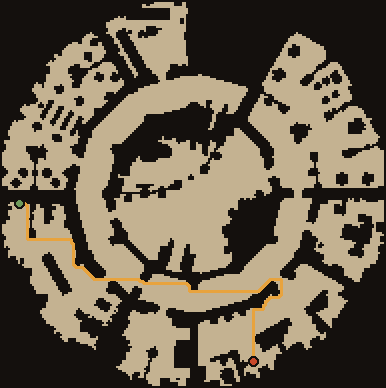
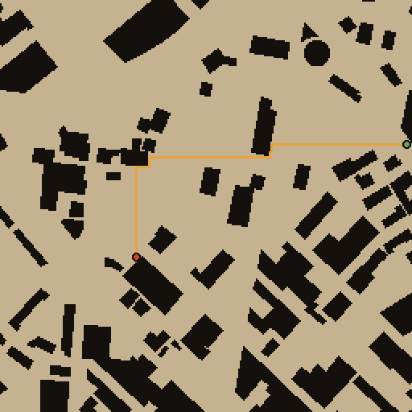
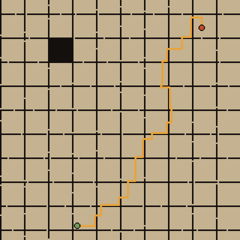
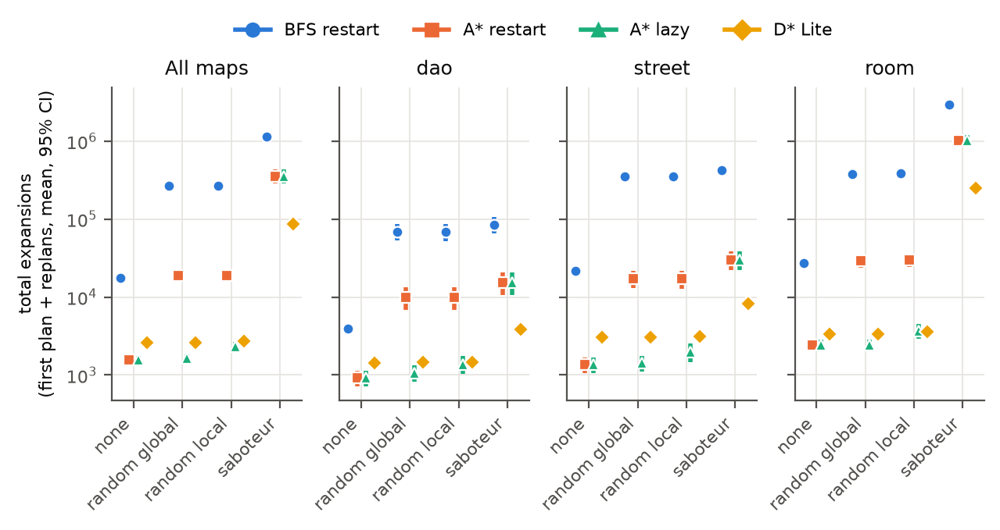
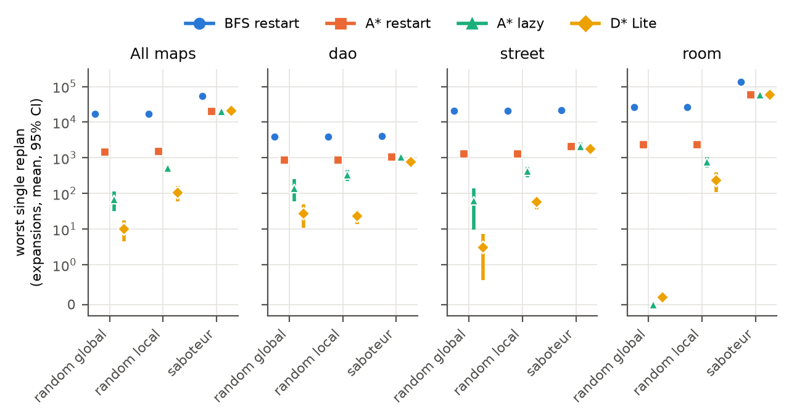
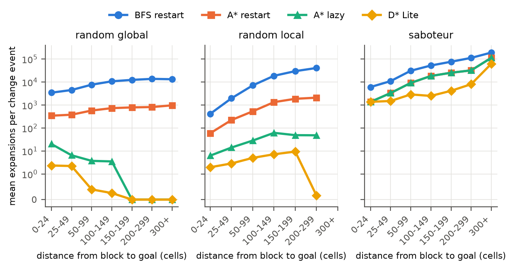
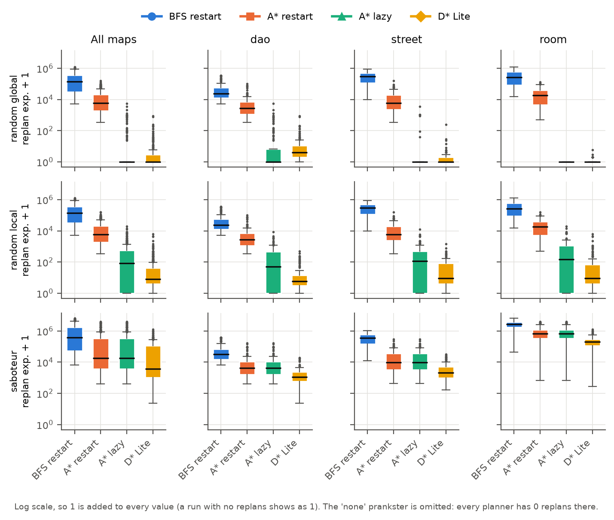
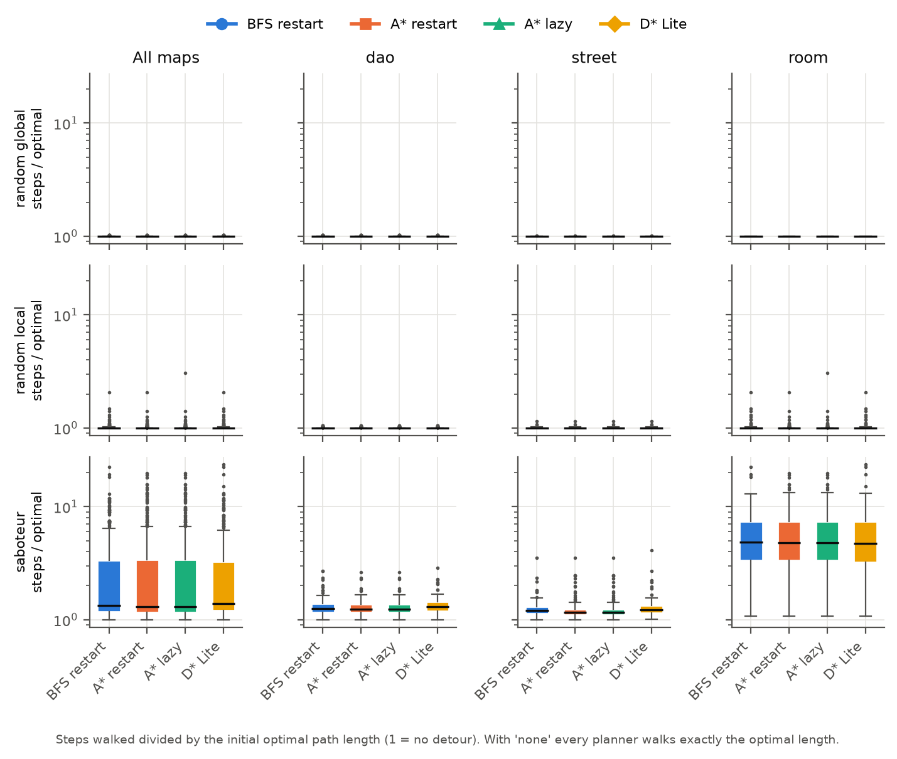

Replanning Against a Saboteur
Does incremental search still save effort when the opponent blocks the route?
Worlds change. NPCs must replan.
Doors close, crates fall, players put obstacles in the way.
When the route breaks, the NPC must replan: find a new path.
Games usually just run A* again, from scratch.
D* Lite reuses its old search and repairs only what changed. Famous for saving work in robotics.
Our game · Outwit
You play a knight who locks doors and drops barrels to stop an AI thief stealing a treasure. The thief replans with D* Lite.
A* starts over from the NPC: every cell it examines is shaded.
D* Lite keeps its old search and fixes only the part the block touched.
Random blocks vs. deliberate blocks
Blocks land anywhere. Most miss the route entirely.
Every block lands on the route, so the NPC must replan every time.
The problem
We don't know whether D* Lite still saves search effort when an opponent deliberately blocks the NPC's route.
Literature Review
| # | Work | What they did | Key point | Gap / relevance to us |
|---|---|---|---|---|
| 1 | Hart, Nilsson & Raphael (1968) | A* search | Optimal shortest paths with an admissible heuristic | Static maps only; our baseline |
| 2 | Stentz (1994, 1995) | D*, Focussed D* | Replanning for robots in partially known terrain | Changes come from sensing, not an opponent |
| 3 | Koenig, Likhachev & Furcy (2004) | Lifelong Planning A* | Reuses earlier search after edge-cost changes | Random / unknown changes |
| 4 | Koenig & Likhachev (2002, 2005) | D* Lite | Simpler incremental replanner, big savings in unknown terrain | Evaluated on robot navigation, not adversaries |
| 5 | Likhachev et al. (2005) | Anytime Dynamic A* | Combines anytime + incremental replanning | No deliberate opponent |
| 6 | Sun, Yeoh & Koenig (2010) | Moving Target D* Lite | Incremental search when the goal moves | The target moves; the map isn't sabotaged |
| 7 | Hernández et al. (2012) | Position paper | "Incremental search is poorly understood": unclear when D* Lite beats A* | Motivates careful baselines like lazy A* |
| 8 | Hernández, Baier & Asín (2014) | Fast A* variant | A* can run faster than D* Lite in partially known terrain | Again no opponent |
| 9 | Sturtevant (2012) | Moving AI grid benchmarks | Standard maps + problems for pathfinding | Our dataset |
| 10 | Botea et al. (2004); Harabor & Grastien (2011) | HPA*, Jump Point Search | Faster pathfinding on static game grids | Static maps, no replanning focus |
| 11 | Orkin (2006); Uludağlı & Oğuz (2023) | Game NPC AI (F.E.A.R., survey) | Games usually just re-run A* | Shows the industry default we test against |
| 12 | Israeli & Wood (2002); Smith & Song (2020) | Shortest-path network interdiction | An attacker blocks edges to make the shortest path as long as possible | Never linked to NPC replanning effort. That's our gap |
Three research threads that never met
A* is the standard; LPA* and D* Lite were built to reuse work when maps change.
Evaluations use random or sensed changes, mostly in robotics. Even experts say it's unclear when D* Lite really beats A*.
Games mostly re-run A*. Operations research studied deliberate blocking for decades, but only from the attacker's side.
Nobody has measured what deliberate blocking does to the cost of incremental replanning.
Dataset: Moving AI benchmark maps

Maps from the game Dragon Age: Origins
lak304d · 193×194 · path 236 steps

Grid maps of real city street layouts
Boston_1_256 · 256×256 · path 238 steps

Artificial rooms joined by doorways (512×512)
16room_005 · 160×160 crop · path 243 steps
Each picture: the longest selected problem on that map, with the 4-connected shortest path found by our ported BFS. ● start ● goal
| Set | Maps | Problems | Median length |
|---|---|---|---|
| dao | 8 | 120 | 87 |
| street | 8 | 120 | 163 |
| room | 8 | 120 | 157 |
| Total | 24 | 360 |
4-connected, each step costs 1, water = wall. The benchmark's own lengths assume diagonals, so we recomputed every length with our own BFS.
Sturtevant (2012) · Open Data Commons Attribution License
Three gaps we set out to close
No opponent, ever
Incremental replanning has only been evaluated under random or sensed changes, never against an opponent who chooses the blocks.
A greedy interdiction saboteur, an idea from operations research.
A weak baseline
Most comparisons use A*-restart. A lazy A* that replans only when its path is hit is much stronger, and rarely used.
Lazy A* as a first-class competitor alongside BFS and A* restart.
Not real game code, no "hitch"
Evaluations rarely use the search code from an actual game, or measure the worst single replan: the freeze a player would notice.
A verified port of our own game's search, plus the hitch as a metric.
One objective, four modules
Measure whether incremental replanning (D* Lite) still saves search effort when an opponent deliberately blocks the NPC's route on benchmark maps, against replan-from-scratch and lazy baselines.
Verified port
Port the game's BFS, A*, D* Lite and heap to Python, and prove they match the game's own test numbers.
→ output: trusted search code
Change models
Four "pranksters":
- none
- random global
- random local
- saboteur (greedy interdiction)
Experiment
5,760
paired runs on 24 benchmark maps, logging every replan.
360 problems × 4 planners × 4 pranksters
Analysis
- total effort, replan effort, hitch
- bootstrap 95% CIs
- Wilcoxon tests + effect sizes
- Holm correction
Methodology
Expansions: cells the search examines. Machine-independent. Time in ms is secondary (Python timing is noisy).
Up to C = 12 cells on the NPC's current path; block each in turn, run its own A*; keep the one that lengthens the trip most (ties → closer to the NPC). Numbers = extra steps, computed live.
What we built
Player = knight. AI thief senses with a 7-tile field of view, uses minimax + alpha-beta for fights and D* Lite for movement. All search hand-written.
level1: walk 4 steps, block the route at (6,3) → both find the same 24-cell path
| Check on level1 | Game | Python |
|---|---|---|
| BFS | 190 | 190 ✓ |
| A* | 67 | 67 ✓ |
| D* Lite | 75 | 75 ✓ |
| Wall-drop: D* vs fresh A* | 3 vs 58 | 3 vs 58 ✓ |
expansions; same path lengths (28 cells; 24 after the block)
- Literal port of the game's heap: same tie-breaking, so expansion counts match exactly.
- D* Lite stays optimal on 40 random maps with random flips each step.
- Mutation testing: we broke the code on purpose to check the tests catch it.
simulator + resumable parallel runner
- 52 runs hit the step cap; re-run with a bigger cap, expansion counts matched exactly.
- Path-limit check never fired; longest measured path 1,999 cells.
Results I: total search effort
Most random blocks miss the path, so lazy A* barely replans. D* Lite's first plan costs a median 1.84× A*'s and is never paid back against lazy A*.
86,989 vs 354,770
305 / 0 / 55 · median ratio 0.36 · r = 0.89 · Holm p < 0.001
Under the saboteur, lazy A* = A* restart exactly: 100% of saboteur blocks land on the planner's path (vs 0.5% random global, 4.5% random local).
The hitch: worst single replan
Typical hitch is lower, but a few huge D* Lite repairs pull the mean back up to A*'s.
"D* Lite gives smoother gameplay"
Why it happens, and what it costs
D* Lite stores distances to the goal. A block near the goal breaks most of that stored search; a block far from the goal breaks only a little.
A D* Lite expansion costs 3–4× longer than an A* one, which cancels its savings in wall-clock time in our Python code.
The saboteur makes every planner walk 2.8–2.9× the optimum. Only the thinking cost differs.
Consistency Every significant result points the same way on dao, street and room; no set reverses it.
Who changes the map decides which replanner is best.
Lazy A* wins
It does the least work. D* Lite's costlier first plan never pays off.
random global · lazy A* 1,641 vs D* Lite 2,610
D* Lite wins
About 4× fewer expansions than both A* variants.
saboteur · D* Lite 86,989 vs A* 354,770 · fewer on 305 / 360
It does not reliably reduce the worst freeze, and in Python its costlier expansions cancel the time saving.
For Outwit, the player is the saboteur, so D* Lite is the right choice for the thief in search effort.
What's new here
First measurement against a deliberate opponent
A greedy shortest-path interdiction saboteur, a concept from operations research, applied to NPC pathfinding.
saboteur: 100% of its blocks hit the route (random global: 0.5%)
A strong lazy-A* baseline
It overturns the usual "D* Lite beats A*" story under random changes.
random global: lazy A* 1,641 vs D* Lite 2,610 expansions
Real game code
A verified, literal port of our own game's search: same test numbers, tie-breaking and expansion counts.
level1: 190 / 67 / 75 and 3 vs 58, all reproduced
The hitch as a metric
We report the worst single replan, what players actually feel, not just averages.
saboteur: mean hitch 20,442 (D*) vs 20,388 (A*)
Rigorous & reproducible
5,760 paired runs; bootstrap CIs, Wilcoxon + Holm, effect sizes. Seeded, resumable; all data and code in the repo.
5,760 runs · 0 errors · 66 tests
Scope and limitations
- 2D grid pathfinding, 4-connected, unit cost
- 3 benchmark map sets (dao, street, room)
- Blocking-only changes
- One greedy saboteur
- Full knowledge: the NPC learns of each block instantly. (Outwit's thief senses within 7 tiles.)
- Block-only: cells never reopen. (In Outwit, doors unlock, barrels get smashed.)
- Timing in Python: 6–38% variation between identical runs; a compiled language could change the time ratio.
- No diagonals; map side capped at 256 (room 512); 24 maps.
- Greedy saboteur (best single block), not an optimal interdiction plan.
- It reacts to each planner's own path, so trajectories differ slightly.
- Heap tie-order verified only on the game's level1 map.
In the game, you are the saboteur
- Play as the knight.
- Drop barrels, lock doors.
- Watch the thief replan around them.
Click a floor tile to drop a barrel. Blocks that would cut the thief off from the treasure are refused, just as in our experiments.
"In the game you are the saboteur, which is exactly the case where D* Lite won."
Outwit's level1 · thief path = shortest 4-connected route (BFS) · browser illustration, not the Godot build
References
- P. E. Hart, N. J. Nilsson, B. Raphael, "A formal basis for the heuristic determination of minimum cost paths," IEEE Trans. Syst. Sci. Cybern., 4(2):100–107, 1968.
- S. Russell, P. Norvig, Artificial Intelligence: A Modern Approach, 4th ed., Pearson, 2020.
- A. Stentz, "Optimal and efficient path planning for partially-known environments," Proc. IEEE ICRA, 1994, pp. 3310–3317.
- A. Stentz, "The focussed D* algorithm for real-time replanning," Proc. IJCAI, 1995, pp. 1652–1659.
- S. Koenig, M. Likhachev, D. Furcy, "Lifelong Planning A*," Artificial Intelligence, 155(1–2):93–146, 2004.
- S. Koenig, M. Likhachev, Y. Liu, D. Furcy, "Incremental heuristic search in artificial intelligence," AI Magazine, 25(2):99–112, 2004.
- S. Koenig, M. Likhachev, "D* Lite," Proc. AAAI, 2002, pp. 476–483.
- S. Koenig, M. Likhachev, "Fast replanning for navigation in unknown terrain," IEEE Trans. Robotics, 21(3):354–363, 2005.
- M. Likhachev et al., "Anytime Dynamic A*: An anytime, replanning algorithm," Proc. ICAPS, 2005, pp. 262–271.
- X. Sun, W. Yeoh, S. Koenig, "Moving Target D* Lite," Proc. AAMAS, 2010, pp. 67–74.
- C. Hernández, J. A. Baier, T. Uras, S. Koenig, "Position paper: Incremental search algorithms considered poorly understood," Proc. SoCS, 2012, pp. 159–161.
- C. Hernández, J. A. Baier, R. Asín, "Making A* run faster than D*-Lite for path-planning in partially known terrain," Proc. ICAPS, 2014, pp. 504–508.
- N. R. Sturtevant, "Benchmarks for grid-based pathfinding," IEEE Trans. Comput. Intell. AI Games, 4(2):144–148, 2012.
- A. Botea, M. Müller, J. Schaeffer, "Near optimal hierarchical path-finding," J. Game Development, 1(1):7–28, 2004.
- D. Harabor, A. Grastien, "Online graph pruning for pathfinding on grid maps," Proc. AAAI, 2011, pp. 1114–1119.
- J. Orkin, "Three states and a plan: The A.I. of F.E.A.R.," Proc. GDC, 2006.
- M. Ç. Uludağlı, K. Oğuz, "Non-player character decision-making in computer games," Artif. Intell. Rev., 56(12):14159–14191, 2023.
- D. R. Fulkerson, G. C. Harding, "Maximizing the minimum source-sink path subject to a budget constraint," Math. Programming, 13(1):116–118, 1977.
- E. Israeli, R. K. Wood, "Shortest-path network interdiction," Networks, 40(2):97–111, 2002.
- J. C. Smith, Y. Song, "A survey of network interdiction models and algorithms," Eur. J. Oper. Res., 283(3):797–811, 2020.
- F. Wilcoxon, "Individual comparisons by ranking methods," Biometrics Bulletin, 1(6):80–83, 1945.
- B. Efron, "Bootstrap methods: Another look at the jackknife," Ann. Statist., 7(1):1–26, 1979.
- S. Holm, "A simple sequentially rejective multiple test procedure," Scand. J. Statist., 6(2):65–70, 1979.
- G. Ramalingam, T. Reps, "An incremental algorithm for a generalization of the shortest-path problem," J. Algorithms, 21(2):267–305, 1996.
- J. A. Baier, A. Botea, D. Harabor, C. Hernández, "Fast algorithm for catching a prey quickly in known and partially known game maps," IEEE Trans. Comput. Intell. AI Games, 7(2):193–199, 2015.
- D. S. Kerby, "The simple difference formula: An approach to teaching nonparametric correlation," Comprehensive Psychology, 3, 2014.
Backup: paper figures




